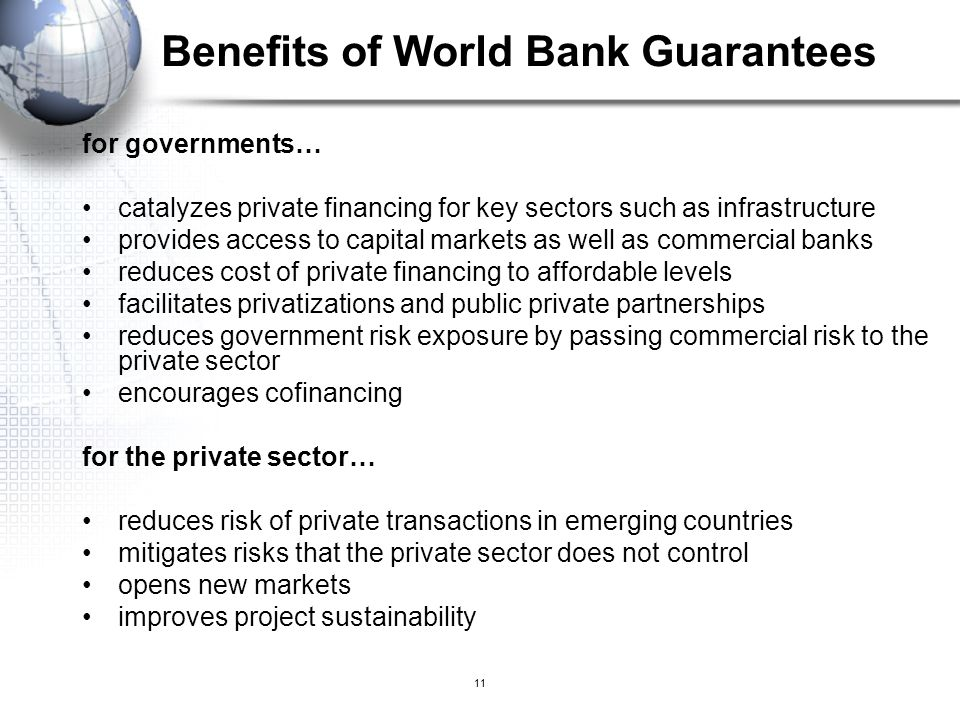

Health, Life, Accident, and Other Insurance Programs
Headquarters-recruited staff and their eligible family members (including domestic partners) may choose from three comprehensive medical/dental benefit plans, with no pre-existing condition exclusions if enrollment is made within 60 days of entry-on-duty. Staff members recruited to a Country Office are eligible for a comprehensive medical/dental benefits plan for themselves and eligible family members, including domestic partners.
The World Bank Group provides basic life and accident insurance to all staff at no cost.
Headquarters-recruited staff can elect additional life and accident insurance coverage at their own expense.
Disability and worker's compensation coverage is provided to all staff at no cost.
Pension Plan
The World Bank Group sponsors a comprehensive pension plan for all staff. Staff and the World Bank Group make contributions toward a pension that is used upon retirement.
Relocation, Resettlement, and Expatriate Benefits
For staff appointed to positions subject to international recruitment, the World Bank Group pays relocation benefits upon appointment and resettlement benefits upon end of employment. The World Bank also pays a mobility premium to eligible expatriate staff appointed to positions at headquarters subject to international recruitment, with eligibility based on nationality and visa/residency status in the appointment duty station. (Staff members appointed to non-headquarters positions subject to international recruitment may be eligible for other expatriate benefits.)
Paid Leave
New staff receive 26 days of annual leave and 15 days of sick leave per year, accrued daily. Parental leave (100 days for Primary Caregiver; 50 days for Secondary Caregiver) is available for childbirth and/or adoption.